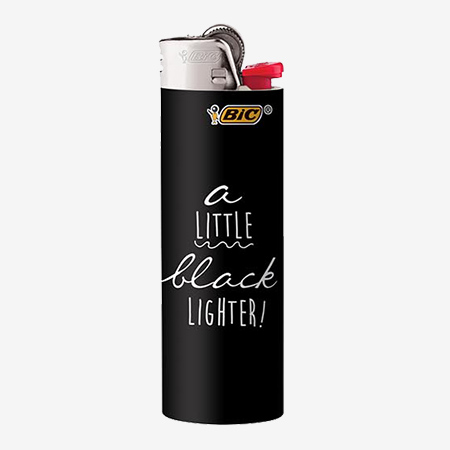

<!--
  Generated template for the AddFlamePage page.

  See http://ionicframework.com/docs/components/#navigation for more info on
  Ionic pages and navigation.
-->
<ion-header>

  <ion-navbar>
    <button ion-button menuToggle>
      <ion-icon name="menu"></ion-icon>
    </button>
    <ion-title>Add Flame</ion-title>
  </ion-navbar>

</ion-header>


<ion-content padding>
  <div id='scanButton'>
    <button ion-button large full round>SCAN</button>
  </div>
  <ion-item>
    <ion-label color="primary">Name</ion-label>
    <ion-input></ion-input>
  </ion-item>
  <ion-thumbnail>
    
  </ion-thumbnail>
  <div id='pictureButtons'>
      <button ion-button round>Add picture</button>
      <button ion-button round>Take a picture</button>
  </div>
  <button ion-button large full round>Add to inventory</button>
</ion-content>
